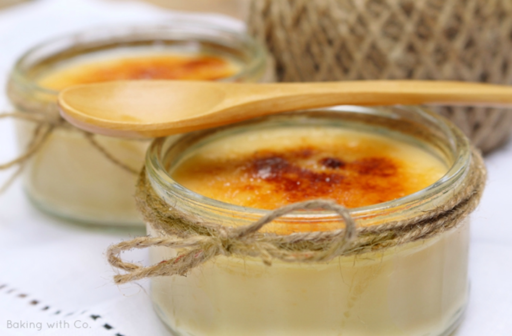
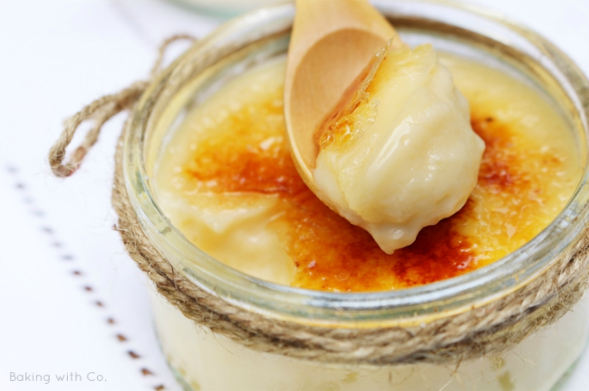

Receta de Crema Catalana
Autora: Laia Brun
Fuente: Baking with Co.

La crema catalana me chifla y me rechifla desde siempre; antes sin el azúcar quemado y, ahora, cuanto más mejor. La receta que os propongo es la tradicional, la que hacía mi abuela y de la que siempre me guardaba un poco sin quemar, solo para mi.
Con muy pocos ingredientes y en solo media hora tienes una crema catalana perfecta, la de toda la vida, para 6 raciones de 125grs.
Ingredientes
- 1 litro de leche
- 6 yemas de huevo
- 200 grs. de azúcar + 50 grs. para quemar
- 50 grs. de almidón de maíz o maicena; originariamente se utilizaba almidón de arroz pero es díficil de encontrar además de bastante caro
- la piel de medio limón
- 1 rama de canela
- 1 pelizco de sal

Preparación
- Hervimos la leche con la canela y la piel de limón
- Colamos y retiramos un cuarto de la leche (a ojo) al que añadiremos el almidón y mezclaremos bien hasta que esté totalmente deshecho, no deben quedar grumos.
- En un bol mezclamos las yemas con el azúcar hasta que quede una masa fina y, poco a poco y sin dejar de mezclar, le vamos echando la leche que teníamos reservada (no la que lleva el almidón) junto con un pellizco de sal
- Colocamos la mezcla a fuego lento, removiendo sin parar (según mi abuela siempre en el mismo sentido) y cuando comience a espesar le añadimos la leche con almidón.
- Seguimos removiendo hasta que tenga la textura deseada; hay que tener en cuenta que, una vez fría (sobretodo si la guardamos en la nevera) espesará un poco más.
- Ponemos la crema en los recipientes en la que los vamos a servir y dejamos enfriar del todo
Montaje
Para quemarla, vamos echando azúcar por partes y quemando; si la cubrimos entera con azúcar, mientras quemamos una parte, el resto lo absorberá y deberemos echar más.
Mi abuela lo hacía con un quemador de los que se calentaban con los fogones pero no he conseguido encontrarlo así que yo utilizo un soplete.
Y listos, más fácil imposible.